O que é o modelo C4
O modelo C4 é uma forma de desenhar a arquitetura de um software em vários níveis de detalhe. O site oficial o descreve como um jeito de criar “mapas do seu código”, aproximando e afastando a visão como num aplicativo de mapas. [1] O nome vem dos quatro diagramas principais: Contexto, Contêineres, Componentes e Código. [7]
Ele resolve um problema conhecido: o diagrama de “caixinhas e setas” que cada pessoa desenha de um jeito, sem dizer o que é cada caixa nem o que significa cada seta. O C4 define um pequeno vocabulário (pessoa, sistema, contêiner, componente) e uma hierarquia entre eles. Com isso, todos sabem em que nível de zoom estão olhando.
Este tutorial explica a teoria e depois a pratica no C4 Studio, um app em um único arquivo HTML. Com ele você desenha os diagramas, simula por onde passam as chamadas e o que cai quando algo falha, e gera a documentação. Nada é enviado para a rede: o projeto fica salvo no seu navegador.
↑ Voltar ao topoUma breve história
O C4 foi criado pelo arquiteto de software Simon Brown, a partir do que ele via ao ensinar equipes a desenhar arquitetura. [5] A linha do tempo traz os marcos, com as datas das fontes consultadas.
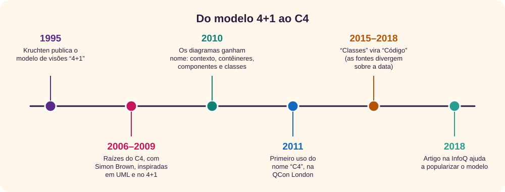
- 1995. Philippe Kruchten publica o modelo “4+1”: quatro visões da arquitetura (lógica, de processo, de desenvolvimento e física) ilustradas por cenários, a “+1”. A ideia de olhar o mesmo sistema por perspectivas diferentes é uma das inspirações do C4. [9][5]
- 2006 a 2009. Surgem as raízes do modelo, inspiradas em UML e no 4+1. [5][8]
- 2010. Os tipos de diagrama ganham nome: contexto, contêineres, componentes e classes. [5]
- 2011. O nome “C4” aparece pela primeira vez, numa palestra na QCon London. O último C ainda era de “classes”. [6]
- 2015 a 2018. “Classes” vira “Código”. O FAQ do site dá 2015–2016, e a página de história diz que a troca só se completou em março de 2018. [5][6]
- 2018. Um artigo de Simon Brown na InfoQ, junto com o site oficial sob licença Creative Commons, ajuda a popularizar a técnica. [7][8]
Brown também escreveu o livro Software Architecture for Developers e fundou o Structurizr, ferramenta que gera vários diagramas a partir de um único modelo. [11][8] O site e os exemplos estão sob a licença Creative Commons Atribuição 4.0. [1]
↑ Voltar ao topoA teoria: as abstrações
O C4 começa pelas abstrações, e não pelos desenhos. São cinco, e cada uma está dentro da anterior: um sistema tem contêineres, um contêiner tem componentes, um componente é feito de código. [2]
| Abstração | O que é | Exemplo |
|---|---|---|
| Pessoa | Quem usa os sistemas: um papel, um ator, uma persona. | Leitor, bibliotecário |
| Sistema de software | O nível mais alto: algo que entrega valor aos seus usuários, humanos ou não. Muitas vezes coincide com o que um time mantém. | Sistema da biblioteca, serviço de e-mail |
| Contêiner | Uma aplicação ou um armazenamento de dados: uma fronteira de execução em que roda código ou ficam dados. É a unidade que se implanta. | Site, API, banco de dados, fila, tarefa agendada |
| Componente | Um agrupamento de funcionalidades relacionadas atrás de uma interface bem definida, dentro de um contêiner. Não é implantado separadamente. | Serviço de reservas, repositório de livros |
| Código | Os blocos da linguagem que formam um componente: classes, interfaces, funções, enums. | ReservaService, LivroRepository |
Contêiner não é Docker. O próprio site avisa: no C4, contêiner é uma aplicação ou um armazenamento de dados. [2] Um banco de dados é um contêiner mesmo que rode num servidor comum, e dois contêineres Docker da mesma aplicação continuam sendo um contêiner C4.
Mitos comuns
“Preciso dos quatro níveis”
Não. Contexto e contêineres bastam para a maioria dos times. Use os outros só quando agregarem valor. [3]
“C4 é uma notação”
É um conjunto de abstrações e diagramas. O site diz que ele é independente de notação: formas e cores ficam a seu critério, desde que haja legenda. [1][4]
“C4 substitui UML”
Ele nasceu inspirado em UML e convive com ela. Os diagramas dinâmico e de implantação, por exemplo, se baseiam nos de comunicação e de implantação da UML. [3]
“Microsserviço é componente”
Um microsserviço que roda e é implantado sozinho é um contêiner (ou um sistema, se tiver vários contêineres e outro time). Componente não se implanta separado. [2]
Os quatro níveis e os diagramas extras
Cada diagrama principal dá um zoom no elemento destacado do anterior. Para cada nível, o site informa o escopo, o público e se vale a pena fazer. [3]
| Diagrama | Escopo | Mostra | Recomendado? |
|---|---|---|---|
| Contexto do sistema | Um sistema | O sistema, as pessoas que o usam e os sistemas com que ele se liga diretamente | Sim, para todos os times |
| Contêineres | Um sistema | As aplicações e os armazenamentos de dados dentro dele, com tecnologias e protocolos | Sim, para todos os times |
| Componentes | Um contêiner | Os componentes dentro de um contêiner | Só se agregar valor; considere gerar automaticamente |
| Código | Um componente | Classes e interfaces, como num diagrama de classes UML | Não: as IDEs geram sob demanda |
| Panorama do sistema | Uma empresa ou área | Um contexto sem foco num único sistema: todos os sistemas e pessoas | Sim, sobretudo em organizações grandes |
| Dinâmico | Uma funcionalidade ou caso de uso | Como os elementos colaboram em tempo de execução, com as chamadas numeradas | Com moderação, para fluxos complicados ou recorrentes |
| Implantação | Um ambiente (produção, homologação…) | Onde cada contêiner roda: nós de infraestrutura, servidores, serviços de nuvem | Sim |
O público muda com o zoom: o diagrama de contexto é para todos, inclusive quem não é técnico; o de contêineres é para a equipe técnica, a operação e o suporte; o de componentes, para arquitetos e desenvolvedores. [3]
↑ Voltar ao topoAs regras de notação
O C4 não impõe formas nem cores, mas pede que cada diagrama se explique sozinho. [4] A figura mostra o que cada elemento e cada relação devem trazer.
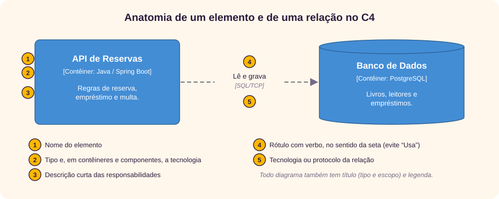
- Título com o tipo e o escopo do diagrama, como “Diagrama de contêineres do Sistema da Biblioteca”.
- Legenda que explique formas, cores, linhas e setas.
- Tipo explícito em cada elemento (Pessoa, Sistema de Software, Contêiner, Componente) e uma descrição curta das responsabilidades.
- Tecnologia em todo contêiner e componente.
- Relações num só sentido, cada uma com um rótulo coerente com a seta. Evite palavras soltas como “Usa”.
- Protocolo nas relações entre contêineres, que costumam ser comunicação entre processos.
- Siglas que todo o público entenda, ou explicadas na legenda. Cores, se usadas, com o mesmo significado em todos os diagramas.
O site transforma essas regras num checklist de perguntas de sim ou não, como “o diagrama tem título?” e “cada seta tem um rótulo que descreve a intenção da relação?”. [4] O C4 Studio ajuda em várias delas: a linha de tipo ([Contêiner: React]) aparece sozinha, a legenda se monta com os tipos usados, e a documentação gerada aponta elementos sem descrição e relações sem tecnologia.
Como modelar, passo a passo
Com as abstrações e as regras em mãos, o trabalho segue uma ordem simples, de fora para dentro:
- Escolha o escopo. Um sistema de software, de preferência o que um time mantém. Se o assunto é a empresa inteira, comece pelo panorama.
- Desenhe o contexto. Ponha o sistema no centro. Pergunte quem o usa (pessoas e papéis) e com quais sistemas ele troca dados, e em que sentido. Ignore tecnologia por enquanto.
- Dê zoom nos contêineres. O que roda separado dentro do sistema? Cada aplicação, banco, fila e tarefa agendada vira um contêiner, com tecnologia. Cada seta ganha protocolo. Repita as pessoas e os sistemas externos do contexto que se ligam a esses contêineres.
- Vá aos componentes só onde precisar. Um contêiner complexo ou crítico pode merecer um diagrama de componentes. Para documentação de longa duração, gere esse nível a partir do código, se puder. [3]
- Pule o código, em geral. A IDE mostra as classes quando alguém precisa delas.
- Acrescente os diagramas extras que responderem a uma pergunta real: “onde isso roda?” (implantação), “o que acontece quando o cliente compra?” (dinâmico), “quais sistemas a empresa tem?” (panorama).
- Revise com o checklist e mantenha os nomes iguais em todos os diagramas. O mesmo elemento deve ter o mesmo nome no contexto e nos contêineres.
Para fixar
- Abstrações primeiro, desenho depois.
- Contexto e contêineres resolvem a maioria dos casos.
- Cada nível amplia um único elemento do nível anterior.
A tela do app
Na primeira vez, o C4 Studio abre o exemplo Loja Online, com sete diagramas: panorama, contexto, contêineres, componentes, código, dinâmico e implantação. Vale passear pelas abas antes de desenhar. Para voltar a ele depois, use Arquivo → Carregar exemplo.
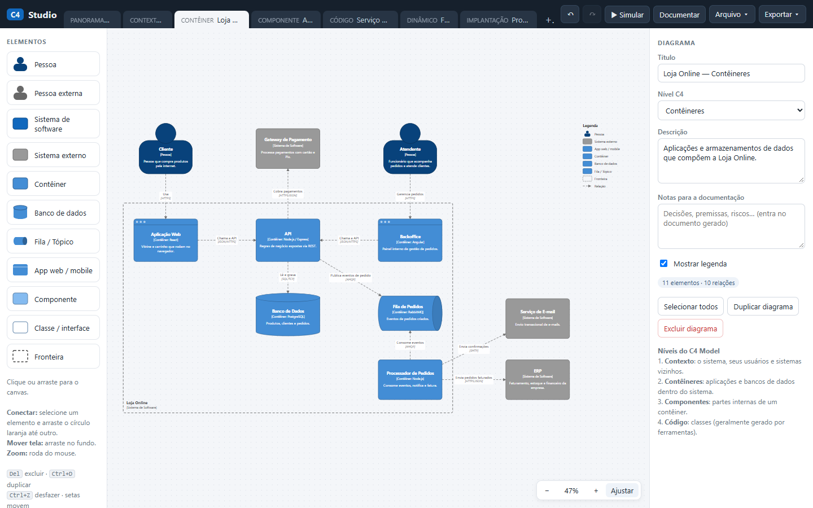
- Barra do alto
- Uma aba por diagrama, com o nível antes do título, e + para criar outro. À direita: desfazer e refazer, ▶ Simular, Documentar, Arquivo ▾ e Exportar ▾.
- Paleta (Elementos)
- Clique num item para criá-lo no centro da tela, ou arraste-o até o ponto desejado. Embaixo há um resumo dos atalhos.
- Área de desenho
- Arraste o fundo para mover a vista e use a roda do mouse para o zoom. No canto, −, a porcentagem (volta a 100%), + e Ajustar, que enquadra o diagrama.
- Painel à direita
- Muda conforme a seleção: Diagrama (nada selecionado), Elemento, Fronteira, Relação, vários elementos selecionados ou Simulação.
Elementos da paleta
Cada item corresponde a uma abstração do C4 e a uma macro do C4-PlantUML, usada na exportação. [10]
| Na paleta | Abstração C4 | Exporta como |
|---|---|---|
| Pessoa / Pessoa externa | Pessoa | Person / Person_Ext |
| Sistema de software / Sistema externo | Sistema de software | System / System_Ext |
| Contêiner, App web / mobile | Contêiner | Container |
| Banco de dados | Contêiner (dados) | ContainerDb |
| Fila / Tópico | Contêiner (mensagens) | ContainerQueue |
| Componente | Componente | Component |
| Classe / interface | Código | Component, com o estereótipo como tecnologia |
| Fronteira | Limite de um sistema, contêiner, empresa ou nó | System_Boundary, Container_Boundary ou Boundary, conforme o tipo |
O campo Nível C4 de cada diagrama aceita Panorama do Sistema, Contexto do Sistema, Contêineres, Componentes, Código, Dinâmico, Implantação e Outro. O app não impede misturar níveis: quem garante a coerência é você.
↑ Voltar ao topoSeu primeiro diagrama de contexto
Vamos modelar o sistema de uma biblioteca municipal. Leitores pesquisam e reservam livros, bibliotecários registram empréstimos, e o sistema manda avisos por e-mail. Faça cada passo no app:
- Abra o C4 Studio e escolha Arquivo → Novo projeto. Confirme. (Dá para desfazer com Ctrl+Z.)
- Com nada selecionado, o painel mostra Diagrama. Em Título, escreva Biblioteca Municipal. Deixe o Nível C4 em Contexto do Sistema, escreva uma Descrição e marque Mostrar legenda.
- Clique em Pessoa na paleta. O elemento surge no centro, com o nome já selecionado: escreva Leitor. Em Descrição, escreva Pessoa que pesquisa, reserva e empresta livros. Arraste-o para o alto, à esquerda.
- Crie outra Pessoa, Bibliotecário (Funcionário que cadastra livros e registra empréstimos.), e arraste-a para o alto, à direita.
- Crie um Sistema de software, Sistema da Biblioteca (Catálogo, reservas, empréstimos e devoluções.), no centro, e um Sistema externo, Serviço de E-mail (Envia e-mails transacionais.), embaixo.
- Para ligar, clique no Leitor. Aparece um círculo laranja à direita dele: arraste esse círculo até o Sistema da Biblioteca e solte quando o destino ficar com contorno verde.
- A relação nasce com o rótulo Usa já selecionado. Troque por Pesquisa e reserva livros e, em Tecnologia / protocolo, escreva HTTPS.
- Faça o mesmo do Bibliotecário para o sistema (Registra empréstimos e devoluções, HTTPS) e do sistema para o e-mail (Envia avisos de devolução, SMTP).
- Clique no fundo e depois em Ajustar.
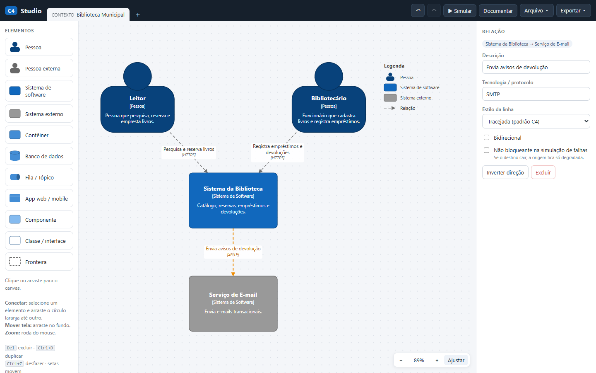
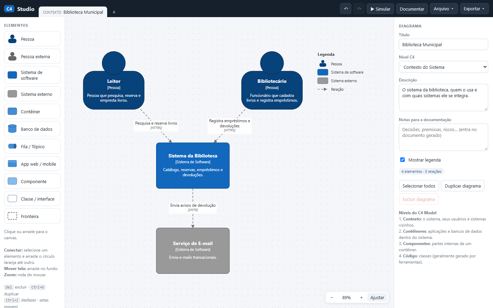
Repare no que o app fez por você: a linha [Pessoa] ou [Sistema de Software] em cada caixa, as setas tracejadas (estilo padrão do C4 no app) e a legenda só com os tipos usados. Com duplo clique num elemento, o cursor vai direto para o nome.
Descer para os contêineres
Agora o zoom no Sistema da Biblioteca: o que roda dentro dele?
- Clique no + ao lado das abas. O diagrama novo já vem com o nível seguinte, Contêineres. Dê o título Biblioteca — Contêineres e marque Mostrar legenda.
- Volte à aba do contexto, selecione o Leitor e clique em Copiar para outro diagrama. O navegador pergunta o número do diagrama de destino: confirme 1. Faça o mesmo com o Serviço de E-mail. A cópia leva nome e descrição, para que os dois diagramas usem os mesmos nomes.
- Na aba de contêineres, crie uma Fronteira chamada Sistema da Biblioteca. Em diagramas de contêineres, o Tipo da fronteira já vem como Sistema de Software. Aumente a Largura para 800 e a Altura para 560. Para mover a fronteira, arraste a borda tracejada.
- Dentro da fronteira, crie um App web / mobile, Site da Biblioteca (tecnologia React); um Contêiner, API (Java / Spring Boot); e um Banco de dados, Banco de Dados (PostgreSQL). Ponha o leitor acima da fronteira e o e-mail à direita, do lado de fora.
- Ligue: Leitor → Site (Pesquisa e reserva livros, HTTPS), Site → API (Chama a API, JSON/HTTPS), API → Banco (Lê e grava, SQL/TCP) e API → E-mail (Envia avisos de devolução, SMTP).
- Clique no fundo e em Ajustar. O painel deve mostrar 5 elementos · 4 relações: a fronteira não conta como elemento.
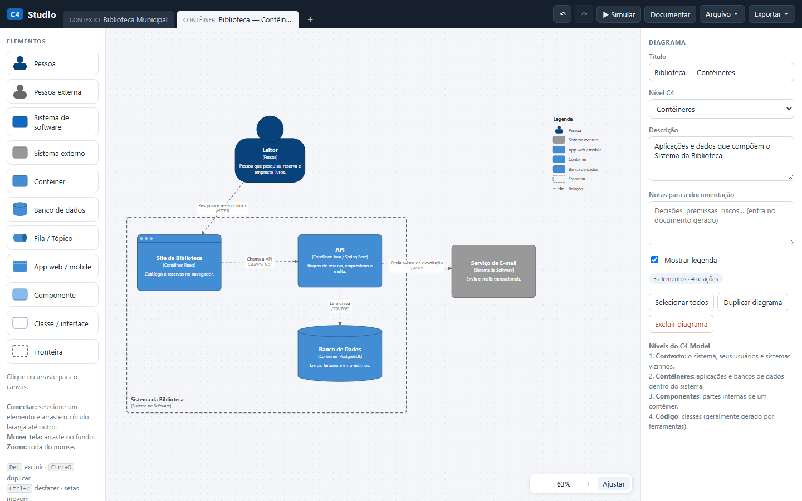
Quando você move uma fronteira, tudo que está inteiramente dentro dela vai junto. Por isso, posicione a fronteira antes de pôr os contêineres dentro. Se um elemento ficar escondido atrás de outro, use os botões de Sobreposição do painel ou Ctrl+] e Ctrl+[.
↑ Voltar ao topoOrganizar o diagrama
Diagramas bagunçados são difíceis de ler. Selecione vários elementos com Shift+clique, ou com Shift arrastando no fundo para desenhar um retângulo de seleção. O painel passa a mostrar as ferramentas de arrumação.
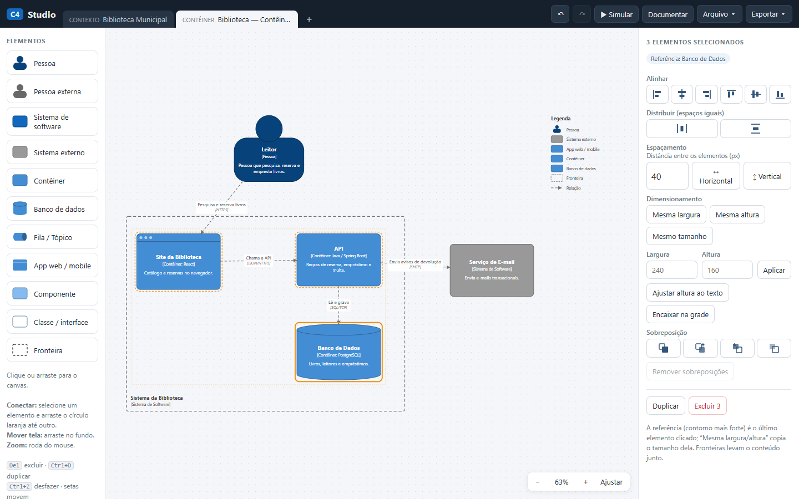
- Alinhar: pelas bordas ou pelo centro, na horizontal e na vertical.
- Distribuir: espaços iguais entre três ou mais elementos.
- Espaçamento: enfileira os elementos com a distância que você escolher, em pixels.
- Dimensionamento: copia a largura, a altura ou o tamanho da referência, o último elemento clicado (contorno mais forte), ou aplica um tamanho digitado.
- Ajustar altura ao texto, Encaixar na grade e Remover sobreposições, que afasta elementos encavalados.
Atalhos
| Teclas | Ação |
|---|---|
| Del | Excluir a seleção (as relações ligadas vão junto) |
| Ctrl+D | Duplicar a seleção, com as relações entre os duplicados |
| Ctrl+Z / Ctrl+Shift+Z | Desfazer / refazer |
| Ctrl+A | Selecionar todos os elementos |
| Setas / Shift+setas | Mover 10 / 50 pixels |
| Alt ao arrastar | Ignorar a grade |
| Espaço + arrastar | Mover a vista mesmo sobre um elemento |
| 0 | Ajustar o diagrama à tela |
| Ctrl+] / Ctrl+[ | Avançar / recuar na sobreposição; com Shift, para a frente / para trás |
| Ctrl+S | Salvar o projeto em .json |
| Esc | Limpar a seleção, fechar janelas ou sair da simulação |
Simular fluxos e falhas
Um diagrama C4 é estático. O C4 Studio acrescenta uma leitura dinâmica das relações: clique em ▶ Simular. Uma faixa verde avisa que o diagrama não é alterado, e a paleta fica desativada. Esc ou Sair da simulação voltam à edição.
Fluxo de chamadas
Na aba Fluxo de chamadas, clique num elemento. O app segue as setas a partir dele, em ondas: o passo 1 são os destinos diretos, o passo 2 os destinos desses, e assim por diante. Relações bidirecionais valem nos dois sentidos. O painel lista cada passo com o rótulo e o protocolo e conta quem foi alcançado. A Velocidade controla a animação, e Repetir roda de novo.
No diagrama de contêineres da biblioteca, a partir do Leitor, o resultado foi: 5 alcançados, 0 fora do caminho, 3 passos.
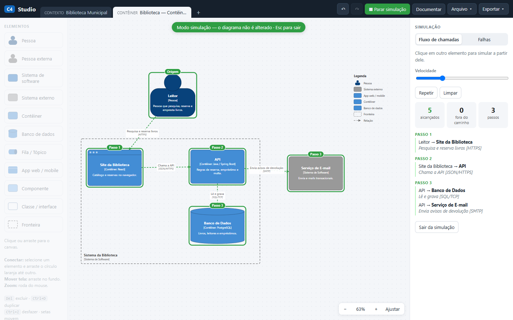
Elementos fora do caminho merecem atenção: ou não participam daquela jornada, o que é normal, ou falta uma relação no diagrama.
Falhas
Na aba Falhas, cada clique tira um elemento do ar (clique de novo para restaurar). A regra de leitura é: uma relação A → B significa “A depende de B”. Se B cai, A fica indisponível, e a falha se propaga para quem depende de A. Três ajustes mudam o resultado:
- Regra de propagação. Com redundância (padrão): dependências do mesmo tipo e da mesma tecnologia contam como cópias uma da outra, e a origem só cai se todas caírem. Sem redundância: qualquer dependência fora do ar derruba quem depende dela.
- Não bloqueante. Marcada no painel da relação, faz a falha do destino apenas degradar a origem, sem derrubá-la. Serve para chamadas assíncronas ou opcionais.
- Encontrar pontos únicos de falha. Testa cada elemento sozinho, com a regra com redundância, e lista os que derrubam outros, do pior para o menor. Clicar num item da lista simula aquela falha.
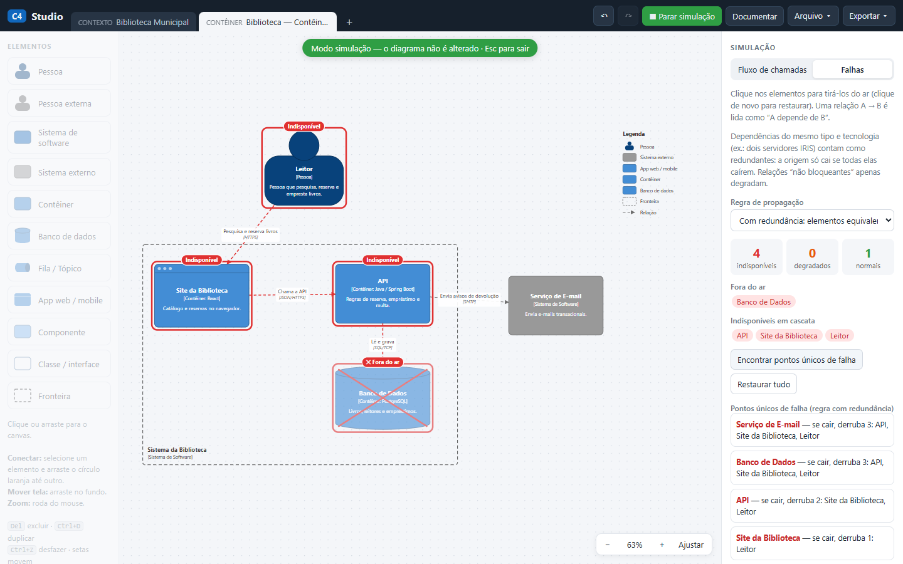
Um experimento
No diagrama de contêineres da biblioteca, os pontos únicos de falha listados foram: Serviço de E-mail e Banco de Dados (cada um derruba 3), API (derruba 2) e Site da Biblioteca (derruba 1). Depois, a relação API → Serviço de E-mail foi marcada como não bloqueante, já que um aviso pode esperar. Os contadores do painel, nas três situações:
| Situação | Indisponíveis | Degradados | Normais |
|---|---|---|---|
| Banco de Dados fora do ar | 4 | 0 | 1 |
| Serviço de E-mail fora, relação bloqueante | 4 | 0 | 1 |
| Serviço de E-mail fora, relação não bloqueante | 1 | 3 | 1 |
O elemento que cai entra na conta dos indisponíveis. Com a relação não bloqueante, só o e-mail fica indisponível, e API, site e leitor passam a degradados. Isso não mede disponibilidade real: é uma leitura das dependências que você desenhou. Se uma seta falta ou está no sentido errado, a simulação erra junto. Use-a para fazer perguntas ao time, como “o que acontece mesmo com o site se o servidor de e-mail cair?”.
No exemplo Loja Online, aba de contêineres, o pior ponto único de falha apontado é a Fila de Pedidos, que derruba 6 elementos.
↑ Voltar ao topoDocumentar, exportar e salvar
Documentar
O botão Documentar monta um documento de arquitetura a partir do diagrama atual ou de todos os diagramas do projeto. Para cada diagrama, ele traz nível, descrição, as Notas para a documentação do painel Diagrama, a imagem, a estrutura de fronteiras e tabelas de elementos, de relações e de dependências por elemento. No fim vêm os pontos de atenção, gerados automaticamente: pontos únicos de falha, elementos sem descrição, relações sem tecnologia e elementos sem nenhuma relação.
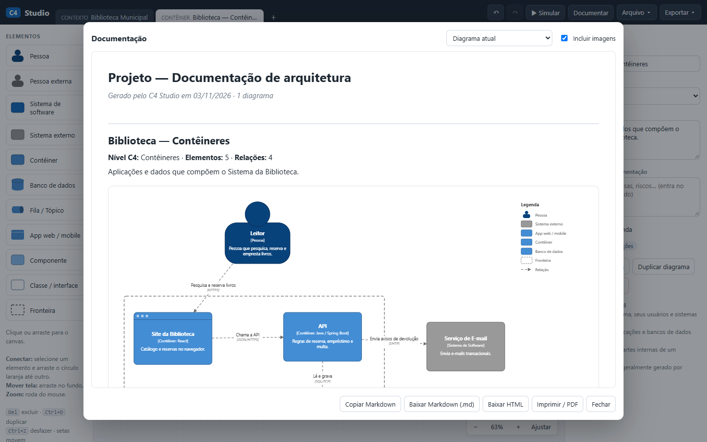
Você pode copiar o Markdown, baixar em .md ou HTML, ou imprimir e salvar em PDF. Desmarque Incluir imagens quando for colar o Markdown numa ferramenta de IA: as imagens entram como texto codificado e ocupam muito espaço.
Exportar
- Imagem SVG e Imagem PNG (em resolução dobrada), com título e descrição embaixo do desenho.
- Código C4-PlantUML, para versionar o diagrama como texto. As posições não vão junto: o PlantUML refaz o desenho. O código inclui a biblioteca C4-PlantUML por um endereço do GitHub, então quem renderiza precisa de acesso à internet. [10]
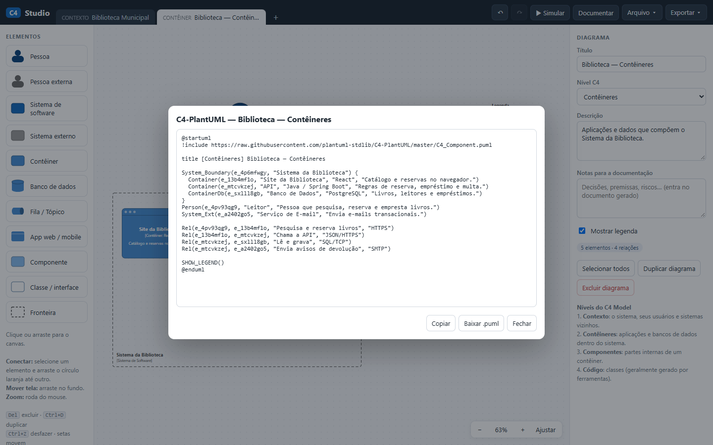
Salvar, abrir e importar
- Salvar projeto (.json) baixa todos os diagramas num arquivo
.c4.json. - Abrir projeto (.json)… troca o projeto atual pelo do arquivo. Dá para desfazer.
- Importar diagramas em novas abas (.json)… acrescenta diagramas sem mexer nos atuais. Uma janela deixa escolher quais entram e renomeá-los. Arrastar um
.jsonpara a área de desenho faz o mesmo. É o caminho para juntar o trabalho de colegas ou trazer diagramas gerados por IA.
O app não tem campo para o nome do projeto, usado no título da documentação e no nome do arquivo. Um projeto novo se chama “Projeto”. Para mudar, edite o campo "name" no .json salvo e abra-o de novo.
Prompts de IA
Uma IA ajuda a sair da página em branco, a extrair elementos de documentação espalhada e a revisar um diagrama contra as regras do C4. Ela também erra com confiança: inventa sistemas, troca o sentido das setas e confunde contêiner com componente. Trate a saída como rascunho. Para escrever prompts melhores, veja o tutorial de prompts.
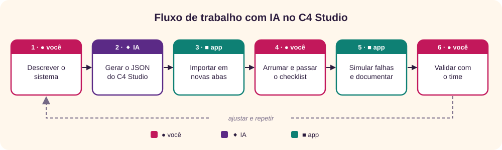
Antes de colar: diagramas de arquitetura revelam nomes de servidores, fornecedores e pontos fracos. Tire endereços, senhas e nomes internos, e siga a política da sua organização para uso de IA. O app não envia nada para a rede, mas o serviço de IA recebe o que você colar.
Troque os trechos entre colchetes e cole na ferramenta de IA que você usa.
1. Entrevistar para montar o contexto
Faz a IA perguntar em vez de supor. É o melhor começo quando o sistema está só na cabeça das pessoas.
Você é um arquiteto de software que usa o modelo C4 (c4model.com).
Quero desenhar o diagrama de contexto deste sistema: [descreva em poucas frases].
Antes de propor qualquer diagrama, me entreviste:
- Faça uma pergunta por vez e espere minha resposta.
- Descubra quem usa o sistema (pessoas e papéis) e para quê, com quais sistemas externos ele troca dados, em que sentido e por qual meio, e quem é dono de cada sistema externo.
- Pergunte também o que acontece quando cada sistema externo fica fora do ar.
- Não invente respostas. Se eu não souber, registre como pendência.
Ao final, entregue:
1. Tabela de elementos: nome, tipo C4 (Pessoa, Sistema de Software ou Sistema externo) e descrição de uma frase.
2. Tabela de relações: origem, destino, rótulo com verbo no sentido da seta, tecnologia ou protocolo.
3. Lista de pendências.2. Extrair contêineres de material existente
Para README, wiki, docker-compose ou atas. Pede a origem de cada item, o que facilita conferir.
A partir do material abaixo, extraia os elementos de um diagrama de contêineres C4 do sistema [nome].
Regras:
- No C4, contêiner é uma aplicação ou um armazenamento de dados que roda separadamente. Não é o mesmo que contêiner Docker. Bibliotecas e módulos internos não são contêineres.
- Use só o que está no material. Para cada item, cite o trecho de origem.
- Marque como [SUPOSIÇÃO] tudo que você deduziu.
Entregue:
1. Pessoas e sistemas externos.
2. Contêineres: nome, tipo (aplicação web, API, banco de dados, fila, tarefa agendada...), tecnologia e responsabilidade em uma frase.
3. Relações: origem → destino, rótulo e protocolo.
4. Contradições e o que falta saber.
Material:
"""
[cole aqui, sem senhas, endereços internos ou dados pessoais]
"""3. Gerar o JSON para o C4 Studio
Gera um arquivo que o app importa. Salve a resposta num arquivo de texto com a extensão .c4.json e use Arquivo → Importar diagramas em novas abas (.json)…, ou arraste o arquivo para a área de desenho. Depois arrume o desenho e rode a simulação de falhas. Mantenha "Sistema de Software" escrito assim: o app usa esse texto para exportar a fronteira como System_Boundary.
Gere um arquivo JSON para o C4 Studio com dois diagramas C4 deste sistema: um de contexto e um de contêineres.
Sistema: [descreva o sistema ou cole as tabelas dos prompts 1 e 2].
Responda só com o JSON, neste formato:
{
"format": "c4studio",
"version": 1,
"name": "[nome do projeto]",
"diagrams": [
{
"id": "d1", "title": "...", "level": "context",
"desc": "...", "notes": "...", "legend": true,
"nodes": [
{"id": "n1", "type": "person", "name": "...", "tech": "", "desc": "...", "x": 0, "y": 0, "w": 200, "h": 190}
],
"edges": [
{"id": "r1", "from": "n1", "to": "n2", "label": "...", "tech": "...", "style": "dashed", "both": false, "soft": false}
]
}
]
}
Regras:
- level: context ou container (outros valores aceitos: landscape, component, code, dynamic, deployment).
- type: person, person_ext, system, system_ext, container, database, queue, webapp, component, code ou boundary.
- Tamanhos (w × h): person 200×190; system e system_ext 240×150; container 240×150; database 240×160; queue 260×130; webapp 240×160; component 230×140.
- No diagrama de contêineres, envolva os contêineres do sistema com um nó "boundary" com "tech": "Sistema de Software" e coloque-o primeiro na lista de nós. Os contêineres ficam inteiramente dentro dele; pessoas e sistemas externos ficam fora.
- x e y em múltiplos de 10, com pelo menos 140 de folga entre elementos. Pessoas no alto; sistemas externos embaixo ou à direita.
- ids únicos em cada diagrama; from e to sempre apontam para nós do mesmo diagrama.
- Uma relação A → B significa "A depende de B" ou "A chama B". Rótulo específico, com verbo (evite "Usa"). Em contêineres, informe a tecnologia ou o protocolo em "tech".
- Todo contêiner tem "tech", e toda descrição é uma frase curta.
- "soft": true só quando a falha do destino não impede a origem de funcionar, como um envio assíncrono de e-mail.
- Em "notes", liste as suposições que você fez.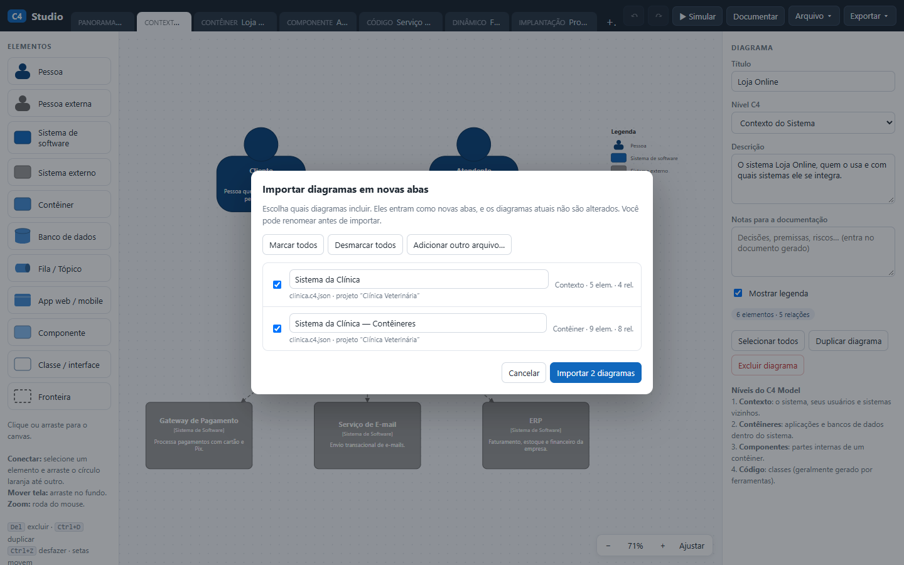
4. Revisar contra o checklist do C4
Cole o Markdown de Documentar → Copiar Markdown, sem imagens. A IA olha o sentido, que as verificações automáticas não enxergam.
Revise a documentação de arquitetura abaixo, gerada pelo C4 Studio, usando as regras de notação e o checklist do modelo C4.
Confira:
1. O título, o tipo e o escopo de cada diagrama estão claros?
2. Cada elemento tem nome, tipo, descrição e, se for contêiner ou componente, tecnologia?
3. Cada relação tem rótulo específico, coerente com o sentido da seta (sem "Usa" genérico), e protocolo quando liga processos diferentes?
4. O nível de detalhe combina com o tipo de diagrama? Por exemplo: classes num diagrama de contêineres.
5. Há elementos isolados, siglas sem explicação ou responsabilidades repetidas?
6. Os diagramas se contradizem, com nomes ou relações diferentes para a mesma coisa?
Para cada problema, informe: diagrama, elemento ou relação, problema, correção sugerida e gravidade (alta, média ou baixa). Separe certeza de suspeita. Não invente fatos sobre o sistema; se depender deles, pergunte.
Documentação:
"""
[cole o Markdown]
"""5. Explicar a arquitetura para quem não é técnico
Bom para validar o diagrama de contexto com gestores e usuários.
Explique a arquitetura abaixo para [público, como: diretoria, atendimento, auditoria], sem jargão técnico.
Entregue:
- Em três frases: o que o sistema faz, quem usa e de quais outros sistemas depende.
- Uma lista "o que acontece quando...": para cada sistema externo e cada banco de dados, o efeito de ele ficar fora do ar.
- Um glossário curto para os termos que não puderem ser evitados.
- Cinco perguntas para eu confirmar com esse público se o desenho corresponde ao que ele conhece.
Use só o que está na documentação. Se algo estiver ambíguo, diga.
Documentação:
"""
[cole o Markdown, sem as imagens]
"""6. Tratar os pontos únicos de falha
Leva o resultado da simulação para uma conversa sobre resiliência.
O C4 Studio analisou o diagrama de contêineres abaixo e apontou os pontos únicos de falha listados.
Na simulação, uma relação A → B significa "A depende de B". Dependências do mesmo tipo e tecnologia contam como redundantes, e relações marcadas como não bloqueantes só degradam a origem.
Pontos únicos de falha:
[cole a lista de Simular → Falhas → Encontrar pontos únicos de falha]
Diagrama:
"""
[cole o Markdown da documentação, sem as imagens]
"""
Para cada ponto único de falha, proponha até duas mitigações (redundância, fila, cache, modo degradado, tempo-limite com alternativa), com custo relativo (baixo, médio ou alto) e o que muda no diagrama: elementos novos, relações novas ou relações que passam a ser não bloqueantes.
Diga quais pontos você manteria como estão e por quê. Não presuma requisitos de disponibilidade que eu não informei: pergunte.7. Registrar uma decisão de arquitetura
O texto resultante cabe no campo Notas para a documentação do diagrama e entra no documento gerado.
Escreva um registro de decisão de arquitetura (ADR) curto para esta decisão: [ex.: pôr uma fila entre a API e o envio de avisos].
Contexto do sistema: [cole a descrição do diagrama de contêineres ou o Markdown sem imagens].
Formato:
- Título
- Status: proposta
- Contexto: o problema e as restrições, em até cinco frases
- Decisão
- Consequências: positivas, negativas e riscos
- Alternativas consideradas, com o motivo da rejeição
- Impacto nos diagramas C4: elementos e relações que entram, saem ou mudam
No máximo 300 palavras. Marque com [CONFIRMAR] o que você supôs.8. Descer aos componentes a partir do código
Para quando um contêiner merece o terceiro nível. Depois, peça ao prompt 3 o JSON com "level": "component".
Quero o diagrama de componentes C4 do contêiner [nome], feito em [tecnologia]. Abaixo estão a estrutura de pastas e os principais arquivos.
Lembre: no C4, componente é um agrupamento de funcionalidades relacionadas atrás de uma interface bem definida, dentro de um único contêiner, e não é implantado separadamente.
Entregue:
1. Componentes: nome, tecnologia, responsabilidade em uma frase e os arquivos ou pastas que o formam.
2. Relações entre componentes e com elementos de fora do contêiner (outros contêineres, bancos, sistemas externos): origem → destino, rótulo e protocolo quando houver.
3. Partes do código que não se encaixam em nenhum componente ou parecem pertencer a mais de um.
Prefira de 5 a 12 componentes. Não liste classes uma a uma.
Estrutura:
"""
[cole a árvore de pastas e trechos relevantes, sem segredos]
"""O que foi testado nestes prompts
O formato do prompt 3 foi testado: um JSON escrito pelo Claude com essas regras, para uma clínica veterinária, foi importado pelo menu do app (2 diagramas, com 5 e 9 elementos), simulou falhas e exportou C4-PlantUML sem erros. Nesse teste, a folga entre elementos era de 100, e alguns rótulos de relação ficaram sobrepostos; por isso o prompt pede 140. Mesmo assim, conte com ajustes manuais no desenho. Os outros prompts não foram executados, e as respostas mudam a cada vez e de uma IA para outra.
↑ Voltar ao topoBoas práticas e erros comuns
| Evite | Prefira |
|---|---|
| Começar pelos componentes | Contexto primeiro, depois contêineres |
| Rótulo “Usa” em todas as setas | Verbo e objeto: “Lê e grava pedidos” |
| Seta com duas pontas por preguiça | Uma seta por intenção, no sentido da dependência |
| Contêiner sem tecnologia | “[Contêiner: PostgreSQL]” |
| Biblioteca desenhada como contêiner | Contêiner é o que roda ou guarda dados separadamente |
| Servidores e redes no diagrama de contêineres | Infraestrutura no diagrama de implantação |
| O mesmo sistema com nomes diferentes em cada diagrama | Copiar para outro diagrama e manter o nome |
| Diagrama sem título nem legenda | Título com tipo e escopo; Mostrar legenda marcado |
| Diagrama de código feito à mão e esquecido | Deixar a IDE gerar quando precisar |
| Tratar a simulação de falhas como medida | Usá-la para fazer perguntas sobre dependências |
| Aceitar o diagrama da IA sem conferir | Revisar, simular e validar com o time |
Revisão rápida
Tente responder antes de abrir.
1. O que significam os quatro Cs?
Contexto, contêineres, componentes e código: os quatro diagramas principais, cada um com mais zoom que o anterior.
2. Um app usa três contêineres Docker para a mesma API. Quantos contêineres C4 são?
Um. No C4, contêiner é a aplicação ou o armazenamento de dados, não a tecnologia de empacotamento.
3. Quais diagramas o site recomenda para todos os times?
Contexto e contêineres. Componentes, só se agregarem valor; código, quase nunca.
4. Onde ficam os servidores e os serviços de nuvem?
No diagrama de implantação, que mostra onde cada contêiner roda num ambiente.
5. O que há de errado com a seta “Usa” entre a API e o banco?
O rótulo é genérico e não diz a intenção. Prefira algo como “Lê e grava pedidos”, com o protocolo, como SQL/TCP.
6. Na simulação de falhas, como se lê a relação Site → API?
“O site depende da API.” Se a API cai, o site fica indisponível, a não ser que a relação seja marcada como não bloqueante.
7. A IA gerou um JSON que abriu sem erros no app. Está pronto?
Não. Abrir sem erros só prova o formato. Falta arrumar o desenho, passar o checklist, simular e validar com quem conhece o sistema.
Referências
- Simon Brown. The C4 model for visualising software architecture e Introduction. Fonte da analogia com mapas, da independência de notação e da licença Creative Commons Atribuição 4.0.
- Simon Brown. Abstractions, com as páginas de software system, container, component e code.
- Simon Brown. Diagrams, com as páginas de contexto, contêineres, componentes, código, panorama, dinâmico e implantação. Fonte de escopo, público e recomendação de cada diagrama.
- Simon Brown. Notation e Review checklist.
- Simon Brown. FAQ. Fonte da autoria, das raízes entre 2006 e 2009, dos nomes de 2010 e do nome “C4” em 2011. Dá a troca de “classes” por “code” em 2015–2016, o que diverge da página de história [6].
- Simon Brown. History. Situa o primeiro uso do nome “C4” na QCon London de 2011 e a troca definitiva de “Classes” por “Code” numa palestra de março de 2018.
- Simon Brown. The C4 Model for Software Architecture. InfoQ, 25 de junho de 2018.
- Wikipédia. C4 model. Situa a criação entre 2006 e 2011, faixa mais larga que a do FAQ [5], e atribui a popularização ao site oficial e ao artigo de 2018.
- Philippe Kruchten. Architectural Blueprints — The “4+1” View Model of Software Architecture. IEEE Software, 12(6), novembro de 1995, p. 42–50.
- plantuml-stdlib. C4-PlantUML, sob licença MIT. Fonte das macros usadas na exportação.
- Simon Brown. Software Architecture for Developers. Leanpub. A página do livro apresenta o autor como criador do modelo C4 e fundador do Structurizr.